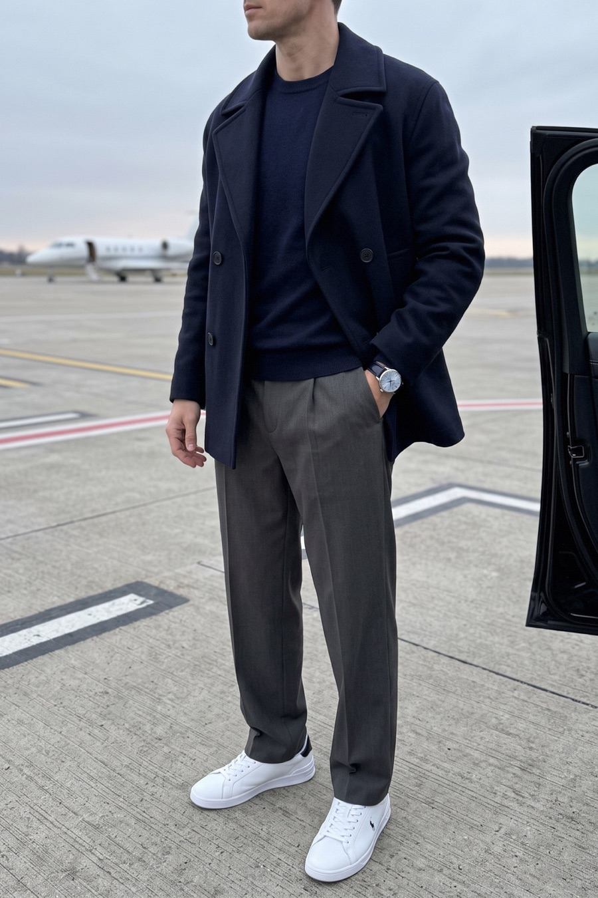
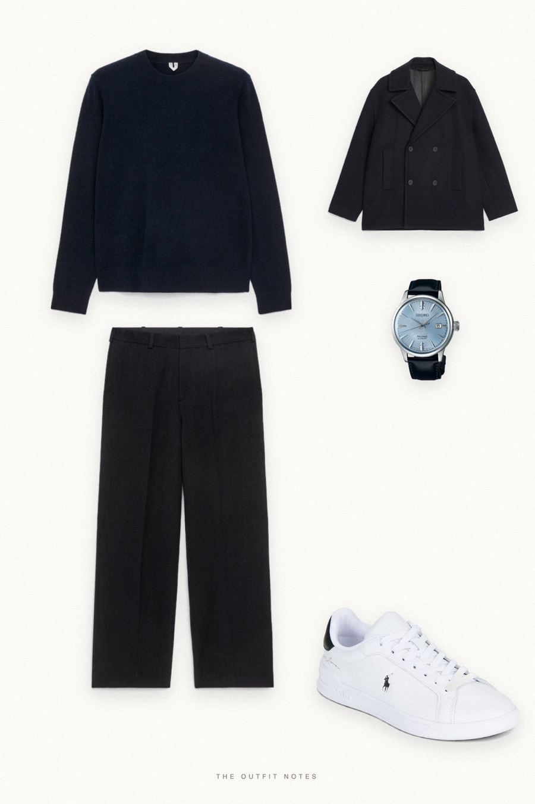

Tarmac Navy
tonal navy, charcoal below


A stealth wealth winter outfit for men: navy wool-blend pea coat over a navy pure cashmere crew-neck, charcoal loose-fit wool trousers and white leather sneakers. Finished with a Seiko Presage on navy leather. Tonal navy, one texture contrast, zero logos. Quiet luxury men's style for cold mornings, travel days and the airport.
The pieces
This page contains affiliate links: if you buy through them, we may earn a commission at no extra cost to you. Disclosure.
 ARKET
ARKET
Navy wool pea coat
Shop ARKET
ARKET
Navy cashmere crewneck
Shop ARKET
ARKET
Charcoal loose wool trousers
Shop Polo Ralph Lauren
Polo Ralph Lauren
White leather court sneakers
Shop Seiko
Seiko
Ice-blue dial dress watch
Shop
Prices are indicative, taken when the look was published, and may have changed. Pictures of the outfit are AI-generated illustrations of real products; the product photos are the retailers' own.
Published 1 October 2026.